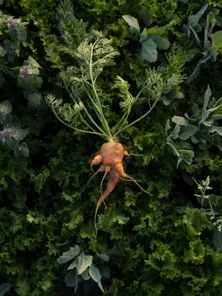
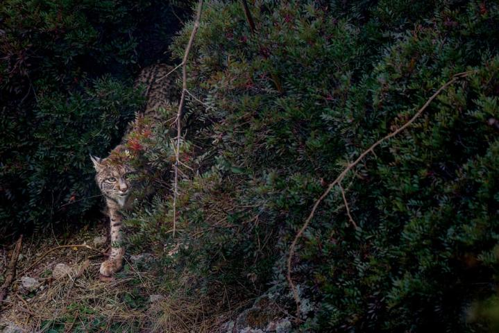

Science
New method delivers life-saving drugs to the brain-using sound...
Read
History Magazine
The victorius origins of Cinco de Mayo
Read

Science
Fruits and vegetables are less nutritious than they used to be
Read
Today's picks

ANIMALS
Vaquita porpoises may still recover if illegal fishing ends
MAGAZINE
4 eco-friendly ways to keep pests out of your yard

MAGAZINE
How this feline became the biggest comeback in cat conservation
HISTORY MAGAZINE
This American's Supreme Court flight defined U.S. citizenship
TRAVEL
To see Saudi Arabia, start with this 'magical' gateway to Mecca

ENVIRONMENT
Forests as 'carbon offsets'? Climate change has other plans.